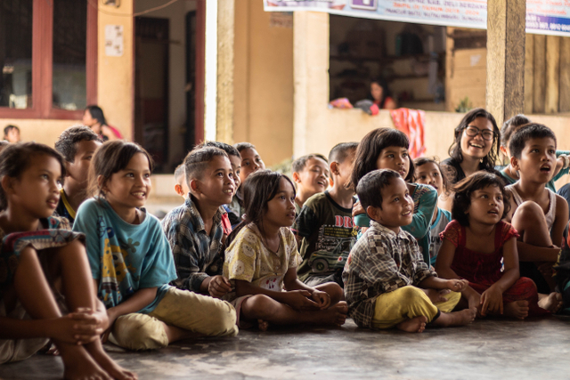
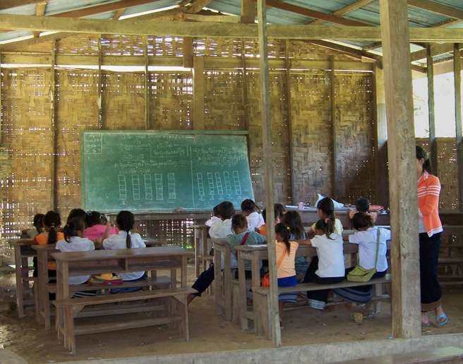

Kenapa sangat penting untuk diketahui dunia?
Kesenjangan pendidikan membutuhkan perhatian dunia karena tidak semua anak memiliki kesempatan yang sama untuk memperoleh pendidikan berkualitas. Masalah seperti kemiskinan, keterbatasan fasilitas sekolah, dan kurangnya tenaga pendidik masih terjadi di berbagai negara, bukan hanya di Indonesia. Oleh karena itu, diperlukan kerja sama internasional agar setiap negara dapat saling membantu mengatasi permasalahan pendidikan dan memastikan semua anak memiliki kesempatan untuk mendapatkan pendidikan yang layak.